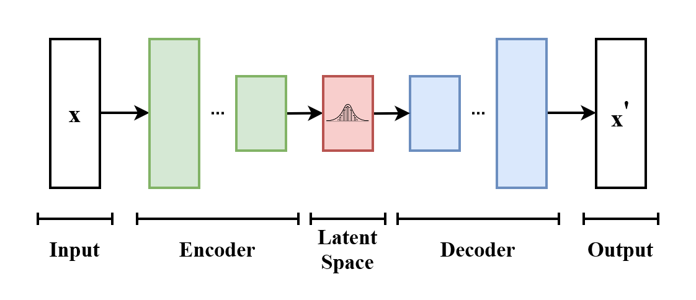

Lecture 11 ended with a choice among measured workloads for tabular data. This lecture changes domains: one private row is now a high-dimensional image. Before reaching for a neural network, we will ask how far a classical covariance model can take us and make its privacy ledger explicit.
This lecture asks a narrower question:
Can we preserve structure without naming every statistic—and exactly where may the private rows influence the result?
Public contract
Private unit: one labeled MNIST image; adjacency adds or removes one row. Lecture 11 substituted a row instead, holding \(n\) fixed. The two neighbour relations are not interchangeable, so its \(\varepsilon=1\) and the numbers below are not two points on a single scale; compare mechanisms within a lecture, and read across lectures only as an order of magnitude.
Canonical classes: the classical opening fits separate models for digits 0 and 3; one conditional VAE trains jointly on digits 0–9; the later Private Evolution support experiment remains a distinct digits-0–3 task.
Overall scope: this notebook as a whole is not DP. It deliberately displays exact/nonprivate covariance foils and nonprivate VAE weights learned from the private target. The ledger below applies only to mechanisms labeled DP.
Deployment warning: private PCA, DP-SGD, and Private Evolution Gaussian-noise seeds are fixed publicly here only to reproduce this public-MNIST lesson. A disclosed seed makes the realized artifact deterministic; the stated epsilon guarantees describe the randomized mechanisms with fresh secret entropy. These frozen seeded artifacts are reproducibility demos, not confidential-data DP releases. Never reuse or publish mechanism-noise seeds on confidential data. Sampling, display, resampling, and variation seeds used only after a DP release may remain public.
Privacy parameters: the shared private-PCA covariance release, established DP-VAE seed, and separate 60,000-row DP-VAE each use \((\varepsilon,\delta)=(2,10^{-5})\). One predeclared Private Evolution run, whatever its declared round count, spends another \((1,10^{-5})\) on the same private target, so \((3,2\times10^{-5})\) is the counterfactual per-one-run seed-plus-evolution bound. This notebook actually releases three private support-condition mechanisms and five private sweep alternatives. Their eight evolution ledgers compose to \((8,8\times10^{-5})\); including the established seed gives the DP-VAE-seed + PE-path aggregate\((10,9\times10^{-5})\). Adding the one shared private-PCA release and the separate 60,000-row DP-VAE gives a simple-composition bound of \((14,11\times10^{-5})\) across every mechanism labeled DP. Rank 10 and rank 3 are postprocessing of the same seeded noisy covariance draw, not two releases.
Public before private access: architecture, hyperparameters, role partitions, per-digit PCA center and scale, clipping radius, embeddings, evaluator definitions, stopping rules, and support conditions. The PCA directions are not public: they are learned from the noisy private second moment. The DP-VAE samples become public only after their first DP release; calling them public at the evolution stage does not erase that cost.
Composition: the two PCA class branches compose in parallel. A staged DP-VAE and Private Evolution mechanism accesses the same target sequentially, so those costs add. All eight released Private Evolution alternatives compose; selecting one after inspection does not erase the other seven costs.
Private PCA and both private VAE releases use the same privacy parameters, but their displayed comparisons are not architecture- or population-controlled. PCA runs separately on each declared private-target digit branch. The established VAE diagnostic and the Private Evolution seed use a width-16/latent-2 model trained on 51,000 private-target rows. The later marginal panel pairs its nonprivate weights with a width-32/latent-8 private model trained on all 60,000 official training rows. Matching \((\varepsilon,\delta)\) does not match rows, capacity, or model family.
All 70,000 MNIST rows enter exactly one of the five disjoint roles. Official test rows are evaluation; fixed public roles and the private target partition the official training rows. Their short hashes are not decoration: they prevent a convenient evaluation row, public candidate, or embedding-training row from silently leaking into the private target.
Code
show_table(artifact.data_role_table)
role
rows
visibility
used for
identity
0
released DP-VAE dataset
1000
public after the epsilon=2 release
disjoint synthetic candidate and RANDOM-refresh subsets
fabd5ba613d2
1
private target
51000
private values/labels; fixed role membership is public
DP-VAE training, then digits 0-3 vote once per PE round
public fixed-partition 69b893330c44
2
real evaluation
10000
public benchmark
TSTR evaluation and exploratory round selection
8d294bd1e841
3
public embedding
3000
public
nearest-neighbor geometry and fixed classifier
345e3234bdbe
4
public reserves
6000
public
frozen source partitions; not used by revised PE example
8a6778 / 591d5a
The released DP-VAE dataset is the starting public population. Its digits 0–3 are split into disjoint synthetic candidate and RANDOM-refresh subsets. The public embedding defines distance and trains the fixed label checker. The real evaluation partition is public. It reports final utility and also selects the displayed 5-round sweep result; reporting that same score is an exploratory diagnostic, not a held-out utility estimate. The private target incurs privacy loss first through DP-SGD and then again through the Private Evolution votes.
The established DP-VAE seed and matched two-digit diagnostic use all 51,000 private-target training rows. Of the 9,000 public training rows, 3,000 train the embedding and fixed classifier; the older public generator/candidate partitions remain visible as audited reserves. The later marginal comparison reuses the established 51,000-row nonprivate weights but compares them with a separately trained private model that treats all 60,000 official training rows as private. The 10,000 official test rows remain evaluation.
This separation matters. “Publicly assisted” does not mean that every public object may be reused for every purpose, and a private evaluation holdout would need its own privacy analysis.
Step 1 — Look at an easier and a harder digit
We will compare digit 0 with digit 3 under one fixed design. A zero is the easier case: its dominant variation is the position, size, and tilt of one closed loop. A three is harder for a single covariance model: its two lobes, open side, stroke endpoints, width, and slant vary more independently.
The rows below come from the untouched public evaluation partition. They let us inspect the task without displaying a private target row.
Step 2 — What PCA is, and how it becomes a generator
Represent each row as a vector \(x_i\in\mathbb R^d\). Ordinary PCA centers the rows at \(c\), diagonalizes their covariance, and retains the \(k\) orthonormal directions \(U_k\) with the largest eigenvalues. The coordinates
\[
z_i=U_k^T(x_i-c)\in\mathbb R^k
\]
are a low-dimensional description. The reconstruction \(c+U_kz_i\) is the closest point to \(x_i\) inside that affine PCA subspace.
PCA itself is a representation, not yet a generative model. A classical synthesis proposal adds one assumption: approximate the coordinate distribution by a Gaussian with mean \(m\) and covariance \(C\). Then generate a new row by
Sampling more \(z_{\mathrm{new}}\) values is cheap. It does not add directions to the PCA subspace or repair a poor Gaussian approximation.
Step 3 — Apply the construction to MNIST
Use all eligible private rows for each target digit and keep every image at its native \(28\times28\) resolution, so \(d=784\). There is no pooling, display upsampling, or additional quantization beyond MNIST’s source pixels. For each target digit \(a\in\{0,3\}\), disjoint public-embedding rows fix only a center \(c_a\) and a common declared scale \(s=10\). They do not fix any PCA direction.
Write \(v_i=(x_i-c_a)/s\) and clip it to the unit L2 ball. We first compute the exact private mean and full empirical covariance and sample all 784 covariance directions. We then truncate the same construction to its leading ten eigenvectors. Both rows are deliberately NONPRIVATE: they isolate the Gaussian assumption and rank truncation before privacy noise enters.
Step 4 — Empirical covariance, fitted separately
Fit one exact 784-dimensional mean and covariance to digit 0 and another to digit 3, then sample directly from each full Gaussian. Any original-to-synthetic gap here is Gaussian-model error—not truncation or privacy noise. The exact empirical moments access private training rows and therefore make no DP claim.
Step 5 — Truncate to ten PCA directions, then privatize
First retain only the leading ten directions of each exact empirical covariance. This is still nonprivate, but it isolates truncation before noise enters. Next apply the same rank-10 sampling rule to a privately released second moment.
Which private-PCA method do we use? The simplest one for this setting: symmetric Gaussian input perturbation, often called Analyze Gauss. Add noise to the private second-moment matrix and then eigendecompose the noisy matrix. This is the basic construction studied by Dwork et al. (2014) and is closely related to the MOD-SULQ input-perturbation method of Chaudhuri, Sarwate, and Sinha (2013).
There is no public basis: the basis itself is learned from private rows. In fixed public units, public-partition 99th-percentile norms are about 0.89 for zeros and 0.90 for threes. For branch \(a\), clip the full-resolution normalized centered vector \(v_i=(x_i-c_a)/10\) to
View the upper triangle as one vector. Under add/remove adjacency its \(L_2\) sensitivity is at most \(\Delta_2=1/n_{\mathrm{ref}}=1/6000\). Add independent Gaussian noise with
to the upper-triangle entries, mirror them, and call the result \(\widetilde S_a\). With fresh secret Gaussian entropy as required above, releasing \(\widetilde S_a\) is \((2,10^{-5})\)-DP. Projecting to the positive-semidefinite cone, taking the top ten eigenvectors, sampling a Gaussian in that subspace, restoring the public scale and center, and clipping pixels are all postprocessing. The PCA basis is learned only from the noisy private matrix.
Why is the two-digit release still \((2,10^{-5})\)? Under add/remove adjacency, one labeled row enters at most one of the disjoint digit branches. The branches therefore compose in parallel, so their privacy costs take a maximum rather than a sum. No class count is released.
The public center is used directly, so there is no separate private-mean query and no hidden split of the privacy budget.
PUBLIC-BENCHMARK REPRODUCIBILITY ARTIFACT; not a confidential-data DP release. Budget labels are randomized-mechanism targets requiring fresh unreleased entropy; never publish private-noise seeds in deployment.
1
private query
public predicates y in (0, 3); fixed public n_ref=6000 per branch
2
adjacency
add/remove one labeled image; it affects at most one digit branch
3
fixed preprocessing
full 28x28 pixels; subtract a per-digit center from disjoint public rows and divide by public scale 10; no pooling and no public PCA directions
4
clipping
every normalized centered row is clipped to the unit L2 ball; public-partition normalized 99th percentiles digit 0: q99=0.88; digit 3: q99=0.90
5
private matrix
784x784 second moment n_ref^-1 sum_i v_i v_i^T
6
sensitivity + noise
upper-triangle L2 sensitivity 0.0002; iid Gaussian scale 0.0004, then mirror
7
randomized-mechanism target
each branch: (epsilon, delta)=(2, 1e-05); parallel composition
8
postprocessing
PSD projection -> top 10 eigenvectors -> rescale by public units -> Gaussian sample -> pixel clip
Step 6 — Private rank-10 PCA
Red rows use the exact rank-10 PCA Gaussian and make no DP claim. Orange rows use the Gaussian-perturbed second moment and retain its leading ten noisy directions. Read red-to-orange differences as covariance-perturbation error; finite displayed samples add Monte Carlo variation to both rows.
Repeat the exact/private comparison with only three retained directions. Rank 3 and rank 10 postprocess the same seeded noisy covariance draw, so they share one privacy cost rather than spending twice. The lower rank removes variation, but it also blocks weaker noise-dominated directions; here the private samples are visibly cleaner.
Zeros expose the easier geometry; threes expose the harder open strokes and two lobes. Each orange branch still uses every eligible private row for its digit, and fixed seeds are not selected for visual quality. Under the fresh-secret-entropy mechanism contract, arbitrary additional sampling from the shared release is free postprocessing.
Step 8 — Remove the digit split: one joint Gaussian
The separate models know whether to sample a zero or a three. Now remove that information: fit one global 784-dimensional mean and covariance to all 51,000 private-target images across digits 0–9. There are no per-digit distributions and no conditioning after projection. The synthetic draws are unlabeled samples from one Gaussian model of the entire digit mixture.
This is an intentionally harder modeling problem. A covariance captures global linear variation, but one Gaussian is unimodal while the digit distribution has multiple separated nonlinear modes.
Sample all 784 nonnegative eigen-directions of the exact global covariance. Only ten unconditional draws are shown. Their blended strokes are model error, not privacy noise: this comparison is explicitly nonprivate.
Retaining only the leading ten directions smooths weak variation, but it cannot turn one Gaussian into a ten-mode digit distribution. Because even this exact nonprivate model looks poor, adding a private joint-covariance variant would confound an already dominant modeling failure with measurement noise and adds little to the lesson.
Path A — train a nonlinear generator on private rows
VAE Step 1 — Encode, sample, and decode
We start from the successful Keras convolutional MNIST VAE, also reflected in the TensorFlow convolutional VAE tutorial, rather than inventing a small dense image model. Two stride-two convolutions encode spatial strokes; a mirrored transposed-convolution decoder reconstructs them. Our only architectural adaptation is to concatenate the public one-hot digit at the encoder bridge and decoder input.

Basic variational-autoencoder flow from input through an encoder, a sampled latent space, and a decoder to the output.
Read the diagram from left to right: encode an observed row, sample in latent space, then decode. Diagram by EugenioTL, licensed CC BY-SA 4.0; downloaded unchanged from Wikimedia Commons.
The conditional variational autoencoder learns an encoder \(q_\phi(z\mid x,y)\) and decoder \(p_\theta(x\mid z,y)\). The encoder does not output one latent code. It outputs a mean \(m_\phi(x,y)\) and log-variance \(v_\phi(x,y)\), which specify \(q_\phi(z\mid x,y)=\mathcal N(m_\phi,\operatorname{diag}(e^{v_\phi}))\). That distribution is the small bell curve in the center of the diagram.
A literal random draw would interrupt backpropagation. The reparameterization writes the same draw as \(z=m_\phi(x,y)+e^{v_\phi(x,y)/2}\odot\eta\), with \(\eta\sim\mathcal N(0,I)\). Randomness is now isolated in \(\eta\), while the path from the loss to the encoder outputs remains differentiable. The decoder maps that latent draw and the requested digit to 784 Bernoulli pixel probabilities.
For one labeled image, the minimized negative evidence lower bound is
The two terms do different jobs. The reconstruction term rewards a decoded sample that explains the observed pixels. The KL term pulls each encoded distribution toward the simple prior \(p(z)=\mathcal N(0,I)\). Reconstruction alone could memorize useful codes while leaving holes between them; then a fresh standard-normal draw could land in a hole and decode poorly. KL regularization trades some reconstruction freedom for a latent space that can actually be sampled. That reconstruction–regularization tension is what makes this a variational autoencoder rather than an ordinary autoencoder.
The requested digit \(y\) enters the encoder and decoder directly; it is not encoded through invented separated prior centers. During training, the encoder provides approximate posterior samples for observed images. During synthesis, the encoder and the original image disappear. To obtain one marginal image distribution, draw \(y\sim\operatorname{Uniform}\{0,\ldots,9\}\), draw \(z\sim\mathcal N(0,I)\), decode, and discard \(y\). Thus \(p_\theta(x)=\frac1{10}\sum_y p_\theta(x\mid y)\). This is the marginal of a conditional model—not a label-free training procedure—but the displayed output is one joint distribution over images. The nonlinear spatial decoder can represent stroke families that one PCA ellipsoid cannot.
VAE Step 2 — Nonprivate marginal VAE synthesis
First test the model without privacy noise. This VAE section uses every eligible private-target row across raw, unshifted digits 0–9: 51,000 images after the disjoint public roles are reserved. The artificial shift family belongs only to the later Private Evolution support experiment. One conditional model is trained jointly: shared convolutional filters can learn reusable strokes and curves, while the one-hot label tells both encoder and decoder which digit is requested. No digit gets a separate VAE run.
At inference, independently draw a digit uniformly, draw \(z\sim\mathcal N(0,I)\), decode, and hide the digit. The figure therefore shows ten unlabeled draws from one marginal mixture rather than ten label-conditional rows. No evaluation image is encoded to construct the red samples.
Ordinary training accesses the private target and makes no DP claim. Its job is to establish that a conditional convolutional VAE and this marginal sampling rule can produce all digit modes. Because the private model below uses more rows and a larger architecture, this foil is not a matched clipping/noise control.
Execution note. Training is maintainer-only and is never run by this notebook. The established nonprivate, clipping-only, and 51,000-row private networks have hash-checked weights. Their legacy bundle also contains historical losses, gradient norms, and clipping statistics; these are internal non-DP maintainer diagnostics, not released evidence and not part of the formal \((\varepsilon,\delta)\) release. The new 60,000-row private appendix packages hash-checked inference artifacts but no training trace; its receipt states that the later control run was interrupted. Notebook execution loads inference artifacts only.
At step \(t\), include each private row independently with public probability \(q\). For every included row, compute the gradient of the complete loss,
\[g_i=\nabla_{\theta,\phi}\ell_i,\]
clip the full per-example gradient to radius \(C\),
Under add/remove adjacency, one row changes the clipped sum by at most \(C\). The normalization uses the public expected batch size \(qN_{\mathrm{ref}}\), not the realized private batch size. The accountant composes all sampled Gaussian steps; sampling, clipping, and noise must agree with that accountant.
PUBLIC-BENCHMARK REPRODUCIBILITY ARTIFACT; not a confidential-data DP release. Budget labels are randomized-mechanism targets requiring fresh unreleased entropy; never publish private-noise seeds in deployment.
1
training access
exact access to 51,000 private-target rows; NONPRIVATE foil
DP-SGD on all 60,000 MNIST training rows
2
model
conditional VAE, latent width 2
conditional VAE, latent width 8
3
inference distribution
draw y uniformly from 0–9, draw z from N(0,I), hide y
draw y uniformly from 0–9, draw z from N(0,I), hide y
4
privacy / randomized-mechanism target
none
(epsilon, delta)=(2.00, 1e-05)
The table is the actual frozen training and inference contract. The private run uses true Poisson inclusion with \(q=0.1\), 400 private steps (40 expected inclusions per row), clipping radius \(C=0.5\), Gaussian noise multiplier 4.121, learning rate 0.25, and SGD with momentum 0.9. The public capacity \(N_{\mathrm{ref}}=60{,}000\) gives denominator \(qN_{\mathrm{ref}}=6{,}000\); realized private batch sizes are not used as denominators. The repository’s PLD accountant reports \((\varepsilon,\delta)=(2.000,10^{-5})\).
These are the same privacy parameters as the two private-PCA branches above. The input populations still differ: PCA fits separate zero and three mechanisms, whereas this conditional VAE trains on all 60,000 digits jointly and is marginalized over a public uniform digit draw at inference.
The larger bridge width 32 and latent width 8, together with the 400-step schedule, were fixed before this from-scratch run. The nonprivate foil instead uses bridge width 16 and latent width 2. No public warm start or pretrained weights are used, and no claim here isolates privacy noise from that capacity difference.
Before trusting the output, the implementation was audited independently. The vectorized complete-ELBO gradients match literal one-example gradients and a finite-difference witness; the global clipping norm and clipped sum match a reference loop; a one-step update matches the declared Gaussian draw exactly; and the accountant recomputes the recorded epsilon. Poisson sampling, latent noise, and Gaussian gradient noise use independent deterministic streams.
The implementation divides each complete reconstruction-plus-KL loss by 784, then clips its full per-example gradient. The constant normalization does not change the nonprivate optimum, but it makes the clipping scale interpretable. The linked term-wise DP-VAE paper studies a different aggregation choice; it is a comparison, not a description of this artifact.
VAE Step 4 — Private marginal VAE synthesis
Use the same public marginalization rule as the nonprivate foil: draw a digit uniformly, draw \(z\sim\mathcal N(0,I)\), decode, and hide the digit. The orange panel shows ten unlabeled draws from the DP-SGD-trained model. The requested digits and latent draws are frozen for reproducibility but are not displayed.
The nonprivate foil accessed 51,000 private-target rows, while this private model trained from random initialization on all 60,000 official MNIST training rows. Their model capacities also differ: bridge/latent widths are 16/2 for the nonprivate foil and 32/8 for the private model. The comparison therefore demonstrates two marginal generators but does not isolate privacy noise under a matched training population or architecture.
The nonprivate weights are not releasable: ordinary training reads every private image through its gradient. Only the orange weights have the displayed DP-SGD guarantee.
The requested digit is hidden in the figures but retained for a fixed public classifier audit. The nonprivate marginal has requested-digit consistency 0.956; the private marginal has 0.936. Both cover all ten predicted classes. Mean classifier confidence is 0.925 for the nonprivate samples and 0.821 for the private samples.
These numbers describe utility, not privacy: the DP ledger is the proof. They do show that the full-data private run has not collapsed to one digit or to a gray average. No clipping-only control is retained in this comparison.
Supplementary matched two-digit diagnostic
The main sequence above compares the requested joint image distributions. Before introducing Private Evolution, retain the original narrower controlled diagnostic using the established 51,000-row frozen VAE release: compare nonprivate PCA, private PCA, nonprivate VAE, and private VAE. Every metric has four adjacent bars. To make those bars comparable, all four diagnostic releases are restricted to digits 0 and 3, contribute 100 synthetic rows per class, and use the same untouched raw evaluation rows.
The fixed public classifier is a fast row-level audit: does an image look like its claimed label, and do both declared classes appear? The TSTR evaluator asks a dataset-level question. For each release it trains a fresh logistic-regression model on the synthetic rows, then tests that model on untouched real evaluation rows. A tiny set of clean prototypes can score well under the fixed classifier yet train a poor decision boundary; a broader, messier release can do the reverse. That possible disagreement is the whole reason to keep both metrics. Neither evaluator is part of the privacy proof. This binary diagnostic is intentionally narrower than the all-ten-digit VAE scores reported later.
Within each x-axis metric, read the four bars left to right as nonprivate PCA, private PCA, nonprivate VAE, and private VAE. Color identifies the model family; hatching identifies private mechanisms. On this deliberately easy binary task, all four releases support strong downstream classifiers. The comparison is useful because it exposes the incremental private/nonprivate gap inside each model family without mixing the PCA two-digit population with the VAE’s later ten-digit evaluation.
The fixed-classifier and TSTR bars still answer different questions, and neither proves or disproves privacy. The formal DP ledger is the proof; these are utility diagnostics.
The private-training path has therefore answered one question and opened another: once its DP output is public, can bounded private selection improve that released synthetic population?
Path B — privately steer a public population
This path retains the established 51,000-row frozen \((2,10^{-5})\) DP-VAE seed used by the original support experiment, rather than silently replacing its candidate population with the new 60,000-row model. After release its 1,000 samples are ordinary public data. For digits 0–3 we split those samples into disjoint candidate and refresh subsets, fix the embedding and variation operators publicly, and ask the private target only:
Which public candidates look most like the private target?
That smaller interface is the core idea of Private Evolution. It moves the new private signal from millions of model-gradient coordinates into one bounded vote per row per round. The seed is free to reuse after release, but the five new voting rounds are not. If exactly one evolution mechanism were predeclared and released, its hybrid would compose to \((3,2\times10^{-5})\). The notebook releases eight such private alternatives, so its aggregate is stated below.
For each private pair \((x_i,y_i)\), find its nearest public candidate among candidates with label \(y_i\) and increment exactly one histogram bin. Removing one private row removes one unit from one bin, so both the L1 and L2 sensitivities of the histogram are one.
Exact duplicate candidates are coalesced for the nearest-neighbor search. A stable hash of the contributing private embedding then assigns its one vote among the duplicate members, so population order cannot privilege the first clone and the one-vote sensitivity remains unchanged.
The next cell is a deliberately tiny, runnable mechanism path. The fixed noise vector is public teaching arithmetic—not a claimed private draw. Compare neighboring datasets that differ only by the last private point.
The neighboring histograms differ by one in exactly one bin. Noise, thresholding, normalization, resampling, and public variation happen after that bounded interface.
In the canonical mechanism, every labeled private row—including its label—is part of the accounted vote. A “public label” assumption is not smuggled into the sensitivity claim.
The PLD accountant calibrates one common \(\sigma_{\mathrm{PE}}\) so all five unit-sensitivity Gaussian histograms compose to \((1,10^{-5})\). This is one evolution-stage ledger. Together with the earlier \((2,10^{-5})\) DP-VAE release on the same target, \((3,2\times10^{-5})\) is the counterfactual bound only if this one mechanism is the sole PE release.
A bin survives the public within-class family-wise false-support rule only after
Normalize the weights and resample within labels. Apply a public one-pixel 2D translation only when it preserves the image’s ink, then refresh 25% of every class from the disjoint half of the released DP-VAE dataset. These operations add no ledger entry. If every weight is zero, the declared fallback is uniform public resampling rather than a private retuning decision.
PUBLIC-BENCHMARK REPRODUCIBILITY ARTIFACT; not a confidential-data DP release. Budget labels are randomized-mechanism targets requiring fresh unreleased entropy; never publish private-noise seeds in deployment.
-6, +0, +6
5000
45
111.111111
8.341979
25.516481
all target modes present
1
recoverable
PUBLIC-BENCHMARK REPRODUCIBILITY ARTIFACT; not a confidential-data DP release. Budget labels are randomized-mechanism targets requiring fresh unreleased entropy; never publish private-noise seeds in deployment.
-6, +0, +6
5000
45
111.111111
8.341979
25.516481
all target modes present
2
support-gap
PUBLIC-BENCHMARK REPRODUCIBILITY ARTIFACT; not a confidential-data DP release. Budget labels are randomized-mechanism targets requiring fresh unreleased entropy; never publish private-noise seeds in deployment.
-6, +0
5000
45
111.111111
8.341979
25.516481
missing +6; 5 < 6
This feasibility gate was fixed before private access. It neither reads nor releases observed private class counts. The predeclared public feasibility assumption is at least 5,000 private rows per declared class; with 45 public candidates, its uniform-load proxy is at least 111.1 votes per candidate. The public-assumption check requires that proxy to exceed \(3\sigma_{\mathrm{PE}}\) in every declared condition. This lower bound is not verified with a private count.
It does not require a particular candidate to survive, a favored metric to improve, or the recoverable condition to win. Realized survivor counts remain diagnostics, never a reason to rerun with friendlier seeds.
One fixed 50-round process
First inspect one mechanism whose maximum is fixed publicly at \(R=50\). Its 50 Gaussian histograms together spend the total evolution-stage budget\((\varepsilon,\delta)=(1,10^{-5})\). Each cell shows eight fixed-seed population members per digit at the seed and after rounds 2, 5, 10, 20, and 50.
These columns are checkpoints from that single 50-round run. They illustrate the process only; each cell is a new population sample, not a tracked individual lineage. In particular, its round-20 checkpoint is not the separately calibrated 20-round release compared next.
Now compare only the final result for each maximum round count. The table includes zero rounds as the released DP-VAE seed before any new private query. The rows at 2, 5, 10, 20, and 50 are final outputs from five separately calibrated mechanisms. Each released \(R\) uses independent deterministic streams, fixed from public seeds, for histogram noise, resampling, and variation; no Gaussian draw is reused across alternatives. For each \(R>0\), the PLD accountant recalibrates the Gaussian scale so exactly that run’s \(R\) histograms compose to the fixed total budget. In particular, the 20-round point is the final output of the mechanism calibrated for 20 compositions; it is not round 20 of the 50-round mechanism, whose per-round noise is larger. The seed has 50 actual rows per class and each evolved population has 100; the sweep evaluates 50 rows per class without inflating either population through replacement-only duplicates.
PUBLIC-BENCHMARK REPRODUCIBILITY ARTIFACT; not a confidential-data DP release. Budget labels are randomized-mechanism targets requiring fresh unreleased entropy; never publish private-noise seeds in deployment.
0
50 (50 unique)
50
0.000
(0, 0)
0.910
1.000
0.976
0.076
1
2
PUBLIC-BENCHMARK REPRODUCIBILITY ARTIFACT; not a confidential-data DP release. Budget labels are randomized-mechanism targets requiring fresh unreleased entropy; never publish private-noise seeds in deployment.
2
100 (37 unique)
50
5.276
(1, 1e-05)
0.950
1.000
0.976
0.072
2
5
PUBLIC-BENCHMARK REPRODUCIBILITY ARTIFACT; not a confidential-data DP release. Budget labels are randomized-mechanism targets requiring fresh unreleased entropy; never publish private-noise seeds in deployment.
5
100 (32 unique)
50
8.342
(1, 1e-05)
0.980
1.000
0.981
0.066
3
10
PUBLIC-BENCHMARK REPRODUCIBILITY ARTIFACT; not a confidential-data DP release. Budget labels are randomized-mechanism targets requiring fresh unreleased entropy; never publish private-noise seeds in deployment.
10
100 (32 unique)
50
11.797
(1, 1e-05)
0.920
1.000
0.977
0.071
4
20
PUBLIC-BENCHMARK REPRODUCIBILITY ARTIFACT; not a confidential-data DP release. Budget labels are randomized-mechanism targets requiring fresh unreleased entropy; never publish private-noise seeds in deployment.
20
100 (28 unique)
50
16.684
(1, 1e-05)
0.960
1.000
0.977
0.070
5
50
PUBLIC-BENCHMARK REPRODUCIBILITY ARTIFACT; not a confidential-data DP release. Budget labels are randomized-mechanism targets requiring fresh unreleased entropy; never publish private-noise seeds in deployment.
50
100 (27 unique)
50
26.380
(1, 1e-05)
0.970
1.000
0.971
0.080
Each nonzero sweep row by itself spends \((1,10^{-5})\) on evolution, so \((3,2\times10^{-5})\) is its counterfactual seed-plus-one-run bound. Zero rounds adds no evolution cost and retains the seed’s \((2,10^{-5})\) bound.
The PE-path ledger is larger. It releases three five-round private support-condition mechanisms plus the five private sweep alternatives: eight PE mechanisms on the same target. Simple composition gives PE \((8,8\times10^{-5})\) and, including the established DP-VAE seed, the DP-VAE-seed + PE-path aggregate \((10,9\times10^{-5})\). The one shared private-PCA covariance release and separate 60,000-row DP-VAE bring the simple-composition bound across all mechanisms labeled DP to \((14,11\times10^{-5})\). The notebook as a whole is still not DP because its exact/nonprivate foils access the private target. Selecting a round count after inspecting the sweep does not erase any released mechanism’s cost. Had one round count been fixed publicly and only that one PE mechanism released, the staged bound would instead be \((3,2\times10^{-5})\).
For the five-bar generator diagnostic below, the declared public selection rule minimizes real-evaluation TSTR log loss, then breaks ties by higher balanced accuracy and fewer rounds. With independent alternative streams, the canonical artifact selects 5 rounds. The bar is postprocessing of the displayed sweep and is not a ninth PE run. But the same public evaluation set both selects that bar and supplies its reported score, so the result is exploratory and has no held-out utility estimate.
Add the defined Private Evolution release to the diagnostic
Only now, after defining the seed, private vote, fixed-budget sweep, independent composition, and selection rule, add the selected Private Evolution release to the earlier PCA/VAE diagnostic. The fifth bar uses the same digits 0 and 3, synthetic rows per class, public classifier, and TSTR evaluator as the four trained generators. The resulting order is nonprivate PCA, private PCA, nonprivate VAE, private VAE, and the selected Private Evolution release. It reuses the selected sweep output; it is not a sixth private run.
The private target contains a public three-mode horizontal-shift family: \(-6\), \(0\), and \(+6\) pixels. Starting from the same released DP-VAE samples, we change only which public shifts are applied to the synthetic seed: Each target row’s mode is assigned by a row-local SHA-256 hash of its own fixed public identity before voting. Deleting any other row cannot change a remaining row’s mode, so this preprocessing preserves the add/remove neighboring relation.
matched: all modes, with counts \((15,15,15)\) per class;
recoverable mismatch: all modes, with counts \((30,10,5)\);
support gap: the \(+6\) mode is absent, with counts \((25,20,0)\).
The first condition is easy, the second asks whether private votes can reweight available support, and the third is a falsification test. The variation operator moves at most one pixel horizontally per round, so five rounds can move at most five horizontal pixels. The absent \(+6\) mode is six pixels from the nearest available mode and remains unreachable with strict slack.
The first column is the released DP-VAE seed; the next five columns are the private evolution rounds. Read the rows as a support experiment, not a photorealism contest. Matched and recoverable seeds contain all target modes; the support-gap seed does not. Private votes may concentrate probability on an available rare mode, but postprocessing cannot manufacture a mode outside the reachable synthetic family.
PUBLIC-BENCHMARK REPRODUCIBILITY ARTIFACT; not a confidential-data DP release. Budget labels are randomized-mechanism targets requiring fresh unreleased entropy; never publish private-noise seeds in deployment.
400
174
25 / 23 / 30 / 29
25.516481
1
2
PUBLIC-BENCHMARK REPRODUCIBILITY ARTIFACT; not a confidential-data DP release. Budget labels are randomized-mechanism targets requiring fresh unreleased entropy; never publish private-noise seeds in deployment.
400
173
57 / 80 / 71 / 59
27.449504
2
3
PUBLIC-BENCHMARK REPRODUCIBILITY ARTIFACT; not a confidential-data DP release. Budget labels are randomized-mechanism targets requiring fresh unreleased entropy; never publish private-noise seeds in deployment.
400
177
71 / 75 / 75 / 85
27.449504
3
4
PUBLIC-BENCHMARK REPRODUCIBILITY ARTIFACT; not a confidential-data DP release. Budget labels are randomized-mechanism targets requiring fresh unreleased entropy; never publish private-noise seeds in deployment.
400
175
73 / 76 / 58 / 74
27.449504
4
5
PUBLIC-BENCHMARK REPRODUCIBILITY ARTIFACT; not a confidential-data DP release. Budget labels are randomized-mechanism targets requiring fresh unreleased entropy; never publish private-noise seeds in deployment.
400
172
63 / 69 / 70 / 77
27.449504
The table reports post-threshold survivors, population size, and unique rows after each round, all downstream of the noised histogram. These values diagnose concentration and diversity; they are not stopping criteria. The canonical run always consumes the predeclared five-round ledger even if an intermediate picture looks good.
Common footing before scores
Before comparing utility, name the released DP object and the private access. The nonprivate VAE accesses the private target without DP. Each public-evolution control starts from the \((2,10^{-5})\) DP-VAE release and applies the same five resample/vary rounds without a new private query. Each Private Evolution row additionally releases five noised voting histograms. Its displayed \((3,2\times10^{-5})\) label is the counterfactual seed-plus-one-run bound, not the DP-VAE-seed + PE-path aggregate or the all-DP-labeled aggregate.
There are now two explicit within-panel footings, not one cross-panel target. The two VAE rows in the established diagnostic below share all raw digits 0–9, all 51,000 private-target rows, architecture, and all 10,000 official test rows; this statement does not describe the earlier 51,000-versus-60,000 marginal comparison. The public-steering rows share the same released DP-VAE seed and the separate digits-0–3 shifted target and evaluation rows. Scores are comparable within a panel; a raw-VAE-versus-shifted- evolution ranking would conflate different target distributions.
released synthetic candidates and bounded variation
DP-VAE weights/samples at epsilon=2
seed mismatch; no target steering
4
DP-VAE + Private Evolution
same target in DP-SGD, then one bounded vote per row/round
same released seed, refresh pool, rounds, variation, output size
DP-VAE release + Gaussian vote histograms
cannot create missing support
For each public-steering condition, the DP-VAE public-evolution control and Private Evolution row receive identical released candidates, disjoint released refresh pools, rounds, variation operators, and output size. The only added information in the Private Evolution row is the accounted private voting signal.
The separate-PCA and DP-VAE privacy budgets are both epsilon 2.000 and delta \(10^{-5}\), although their input classes and model families differ. The evolution stage alone spends epsilon 1, but the released seed already spent epsilon 2; epsilon 3 is only the counterfactual seed-plus-one-run bound. The notebook’s three support mechanisms and five sweep alternatives compose with the seed to epsilon 10 and delta \(9\times10^{-5}\) for that path. Adding the shared private-PCA release and the separate 60,000-row DP-VAE yields the all-DP-labeled simple-composition bound \((14,11\times10^{-5})\). Utility values across the two panels must not be advertised as an equal-budget ranking.
Two evaluation questions, four reported columns
Label consistency: does the fixed public classifier agree with each released label?
Class coverage: what fraction of the method’s declared classes does that classifier predict (ten for VAE, four for Private Evolution)?
TSTR balanced accuracy: can a fresh classifier trained on synthetic rows predict the untouched real evaluation rows across all classes?
TSTR log loss: are its real-evaluation probabilities well calibrated?
All metrics below are realized artifact values. There is no test that a preferred method must win. The selected 5-round diagnostic is chosen and reported on this same public evaluation set, so its utility number is exploratory, not held out.
randomized-mechanism target: (epsilon, delta)=(2, 1e-05); matches private PCA; frozen seeded output is a public-benchmark demo
0.900
1.000
0.771
0.839
3
matched DP-VAE public-evolution control
randomized-mechanism target: (epsilon, delta)=(2, 1e-05); frozen seeded output is a public-benchmark demo
0.978
1.000
0.749
0.821
4
recoverable DP-VAE public-evolution control
randomized-mechanism target: (epsilon, delta)=(2, 1e-05); frozen seeded output is a public-benchmark demo
0.978
1.000
0.739
0.896
5
recoverable DP-VAE + Private Evolution
randomized-mechanism target under simple composition: (epsilon, delta)=(3, 2e-05); DP-VAE + PE; frozen seeded output is a public-benchmark demo
0.988
1.000
0.820
0.598
6
support-gap DP-VAE public-evolution control
randomized-mechanism target: (epsilon, delta)=(2, 1e-05); frozen seeded output is a public-benchmark demo
0.978
1.000
0.651
1.819
7
support-gap DP-VAE + Private Evolution
randomized-mechanism target under simple composition: (epsilon, delta)=(3, 2e-05); DP-VAE + PE; frozen seeded output is a public-benchmark demo
0.983
1.000
0.667
1.694
Read the result, not the method names
Private training: the retained established DP-VAE seed covers all ten classes. The new 60,000-row marginal VAE audit above also has full coverage; neither artifact collapses to one class.
Recoverable mismatch: relative to the same five public resample/vary rounds without votes, Private Evolution raises TSTR balanced accuracy from about 0.738 to 0.812 while preserving full class coverage. Read the table above for the other realized metrics. This is a realized improvement from iterative private reweighting, purchased by the additional \((1,10^{-5})\) evolution ledger—not a universal dominance claim.
Support gap: both rows remain limited by the missing mode. It is mechanically unreachable; aggregate scores cannot refute the mechanical \(5<6\) support proof.
The fixed-classifier columns and TSTR columns need not move together. A sample can look label-consistent yet be a poor training distribution, or support a classifier while missing a declared mode.
The three error sources return
Lecture 11 separated model misspecification, private-measurement error, and finite synthetic-sample error. Here the same decomposition appears in new clothes:
representation/support error: the VAE family or public generator cannot express the target;
private learning/selection error: clipping and Gaussian noise distort training gradients or voting histograms;
sampling error: a finite released population fluctuates around the learned model or postprocessed weights.
Generating more rows addresses only the third. It cannot undo a collapsed VAE, recover an unreachable public mode, or improve the privacy accountant.
Honest close
Learned generators do not escape the contract-first discipline:
DP-SGD makes the training trajectory private by clipping and noising per-example gradients.
Private Evolution can start from a released DP generator. Its samples are public at the steering stage, but their earlier privacy cost remains in the ledger; new bounded Gaussian votes compose with it.
Public data quality, rare classes, provider/API trust, representation limits, and target-side tuning remain real failure modes.
Evaluation on an additional private holdout would require its own mechanism.
Reconstruction, membership, and attribute-inference attacks remain valuable diagnostics, but a low attack score is not a privacy proof.
The formal ledger is primary. The pictures and scores tell us whether the private release is useful and where its public assumptions break.
Reading map
Deep Learning with Differential Privacy introduces the sampled, clipped, noised-gradient route used by the DP-VAE mechanism. Private Evolution supplies the select–threshold–resample–vary framework used by the public-steering path. The lecture’s conditional VAE clips each example’s complete ELBO gradient; the DP-VAE term-wise aggregation paper is a useful comparison because it deliberately studies a different aggregation choice.
JAM-PGM uses public information to propose tabular marginal structure. PMW^Pub, GEM, Aug-PE, DP-MERF, and Tabular Private Evolution extend public assistance in other directions. DP-MERF is a useful measurement-to-generator bridge but is not a substitute for this lecture’s DP-SGD generative-model beat.


{kind=link}